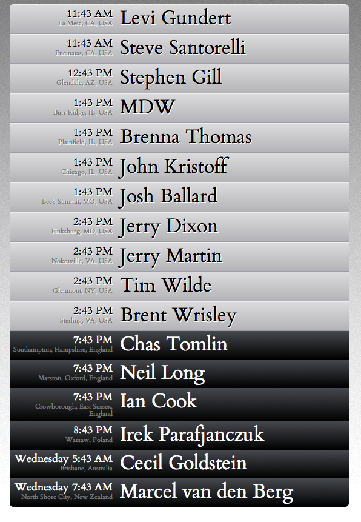

Chronistic
If you have friends or colleges in different timezones, Chronisitic
is the easiest way to see their local time and if it is during working
hours where they are.
Here's a screenshot of the Team Cymru workers:

The list is editable by the user and uses HTML5's LocalStorage option to save the
user's preference when they come back to the page.
Languages
- HTML5 & HTML5's LocalStorage
- CSS3
- JavaScript
- Python
Tools
- WebKit Inspector
- JSON
- Ajax